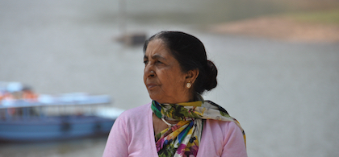

Serve Educate Empower
VedKrishna Foundation is a NGO registered in India under section 8(1) of Companies Act 2013 and was incorporated in August of 2014.
VedKrishna foundation is a culmination of a decade old dream of our Founding Director, Mr. Dheeraj Kaushik..A vision he had to do something for his country India; which has given him so much in his life.
His father Shri Sri Krishna Sharma was long associated with the field of education and had worked extensively in areas like adult education and education for school drop-outs. Shri Sri Krishna Sharma retired as Assistant Education Officer from Directorate of Education, Delhi in the year 1991. His father is widely respected and adored for this sweet nature and service to the society. His father expired in 2007 due to Parkinson's disease.
His mother Smt Ved Kumari Sharma also dedicated almost 40 years of her life towards education with Department of Education, Haryana. In her glorious years as a teacher and mentor to thousands of students; She earned nothing but immense respect from her students and their parents. Dheeraj Kaushik feels privileged and blessed to have both of them as his parents..Almighty couldn't have given him anything better than this. VedKrishna Foundation is his prayer in his parent’s feet. Mrs Ved Kumari Sharma has blessed us; by being the Founding Director and lifelong President of this initiative.

Founding President, Retired Principal
Vice President, Technology Expert
MISSION:
VALUES:
SOLUTION:
Language Capabilities: 19 Languages/Dialects
We have a team of over 100 working professionals/development sector professionals/language enthusiasts/voice over artists along with volunteers project manager, graphic designers who collaborate over work.
Some of our COVID-19 Response Work:
Ourstory: How Project Setu is making information accessible to all during the coronavirus outbreak
Arunoday Foundation was formed/registered on 25th of Feb 2016. The mission of the foundation is to provide quality education to the rural children. The inspiration comes from Tapovani Mata Sant Subhadra’s drive to spread ‘Shiksha, Swasthya and Sanskar’. The founder Narendra Shetty and General Secretary Gajendra Singh have been followers of Tapovani Mata for a long time.
Some of our contributions:
We believe recycling has failed as far as single use plastic is concerned. Therefore, we want to spread awareness regarding not using the same. We wish to promote alternatives bags made of jute/cotton/bamboo.
We believe water-conservation needs our focus in India right now before it becomes water scarcity becomes epidemic in our country. We shall work towards creating awareness around rain-water harvesting and water conservation in general.
We shall work for the “Skill Development” for underprivileged youth of our society; enabling them to be economically independent so that they can lead a respectful and productive life.
We shall help in creating self-help groups across India to support elderly-care, women-issues and create awareness around the issues involved.